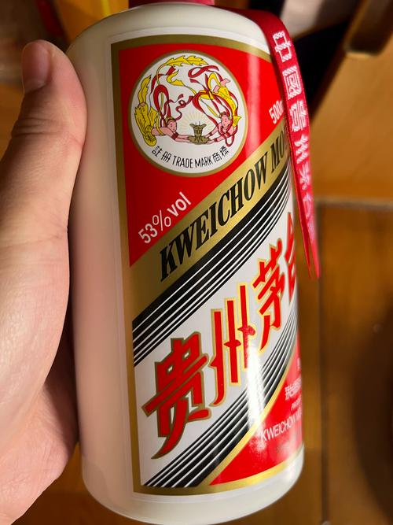

🏺 What is Moutai?
Moutai (茅台, Máotái) is China's most famous and prestigious liquor — a baijiu (白酒, literally "white spirit") that has been produced for over 800 years in a small town called Maotai in Guizhou Province, southwestern China.
🌟 Why is Moutai Special?
- Sauce-Aroma (酱香型): Moutai belongs to the "sauce-aroma" category of baijiu — known for its complex, layered fragrance reminiscent of soy sauce, fermented beans, and umami richness
- National Spirit: Often called "China's National Liquor" (国酒), served at state banquets and diplomatic events
- Geographic Protection: True Moutai can only be produced in Maotai Town, where the unique climate, water from the Chishui River, and local microorganisms create irreplaceable conditions
- Luxury Status: One of the world's most valuable spirit brands, often compared to fine Cognac or aged Scotch
"If there is no Moutai, it is not a state banquet." — Popular Chinese saying

The iconic Flying Fairy (飞天) Moutai bottle